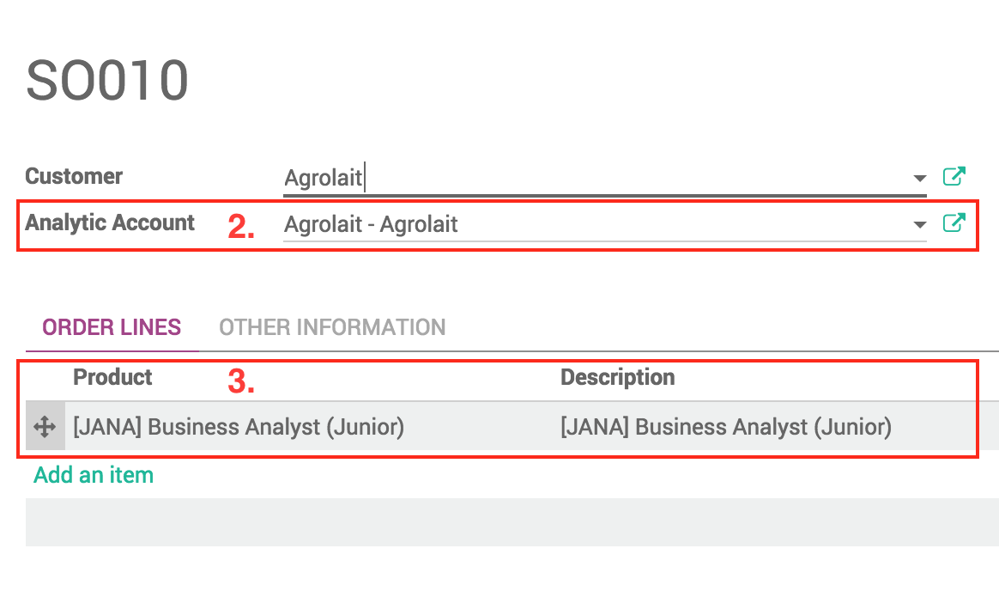

Timesheet - Work Logger
Log time through an awesome wizard!


This module adds a wizard to log your work easier.
The timesheet grid has been disable to avoid issues with the widget and to force a description for each time log.
This also forces users to specify the project they were working on.
The wizard also allows you to select a task which will automatically set the project.
You can also specify a product for each time log.
The wizard is also available from the task view and by clicking directly in the desired timesheet cell!

User Guide
How to log time from your timesheets?

- To log work, go to your timesheets and click on the button Log Work
- You can also directly click on the line of the project/task at the desired date and it will pre-fill the task (if there is a task), project and date.
How to log time from tasks?
- To log work from a task, go to the desired task and click on the button Log Work.
- The task, project and date will be pre-filled.

How to manage available products on a project?

- As project manager with Analytic Accounting rights, go to Sales > Sale order and create a new Quotation
- Select the project (it's under Analytic Account)
- Add the allowed products in the Sale Order.
Note: this modules limits you to create only one quotation per project.